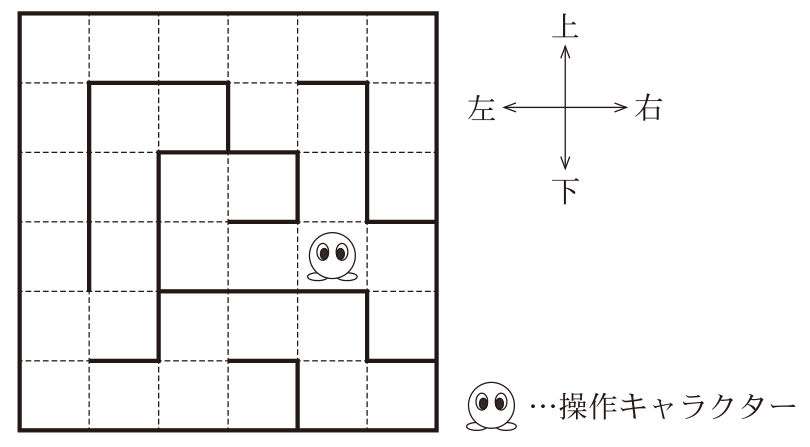
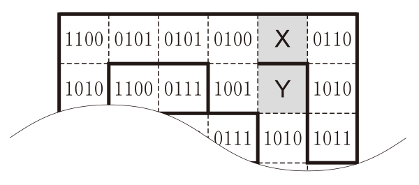
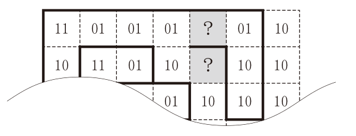
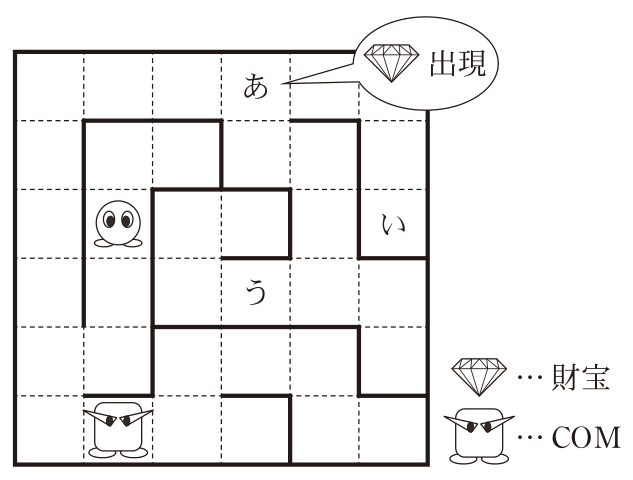
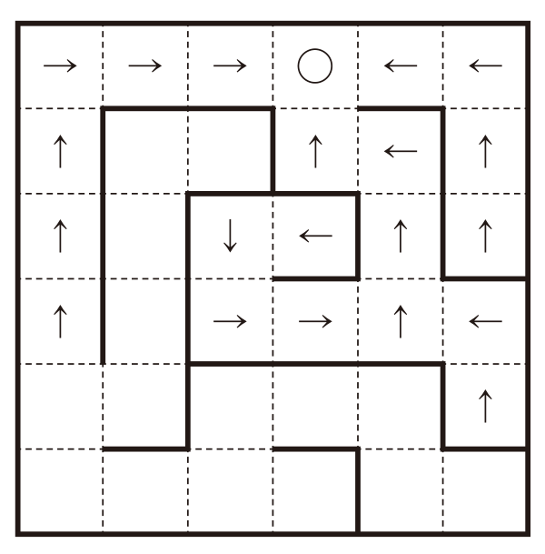
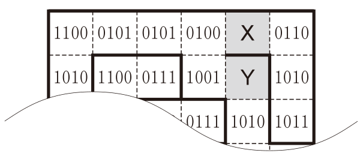

B 次の文章を読み，後の問い（問1・問2）に答えよ。
SさんとTさんは，迷路を使ったゲームを作ろうとしている。迷路は図1のようにマス目を壁（太線で表されている。）で区切って作る。キャラクターは，上下左右の入力操作を受け，その方向に壁がなければ隣接するマスに移動する。

問1 次の文章を読み，空欄 ク ， シ に当てはまる数字をマークせよ。また，空欄 ケ ～ サ に入れるのに最も適当なものを，後の解答群のうちから一つずつ選べ。
迷路の表示とキャラクターの移動処理を実現するために，迷路のマスごとに一つの数を割り当てて迷路の構造を表現するような方法をSさん，Tさんがそれぞれ考えた。次は，そのときのSさんとTさんの会話である。
S：私は4ビットの2進表記で考えてみたよ（図2）。左端のビットから右側に向かって，マス目の上下左右に対して左→上→右→下の順で，壁がある場合は1，壁がない場合は0が並ぶような表現にしたんだ。
T：その場合，一つの壁の有無の情報が二つのマスで重複していて無駄じゃない？例えば，図2のXのマスの左端から4ビット目と，Yのマスの左端から ク ビット目は同じ壁の有無を表してるよね。私の方法（図3）
も2進表記だけど，それぞれのマスごとに，左と上だけ，壁があるかどうかを表すようにしたんだ。仮想的なマス目を，右と下に一列ずつ余分にくっつけて表現する必要はあるけど。
S：なるほど。確かに重複はなくなったけど，キャラクターが移動できるかどうかの判断がやりにくくない？図2だと右に移動できるかどうかはすぐわかるけど，図3ではどうする？
T： ケ なら右に壁がある，ってわかるけど，確かに難しくなったね。
S：迷路全体を表すのに必要なデータ量はどっちが小さくなるのかな。元の迷路がN × N マスでできているとき，迷路全体を表すために，私の方法（図2）では コ ビット，Tさんの方法（図3）では サ ビットが必要になるってことか。Tさんの方法の方が必要なデータ量が少なくなるのは，N ＞ シ のときだね。


問2 次の文章を読み，空欄 ス ・ セ に入れるのに最も適当なものを，後の解答群のうちから一つずつ選べ。また，空欄 ソ に当てはまる数字をマークせよ。
ゲームを面白くするため，財宝がどこかのマスに現れ，コンピュータが操作するキャラクター（以下，COM と呼ぶ。）と，どちらが早く財宝にたどり着くかを競うゲームにしようと考えた。後の会話は図4と図5を見ながらの議論である。


S：どうやったら自動的にCOM を動かせるのかな。COM は今，右と左に進むことができて，財宝は右上方向にあるけど，ここでは左に進まないと最短で財宝にたどり着かないよね。どうやってそれがわかるのかな？
T：この迷路は，財宝への行き方は1通りになるように作ってあるから，それぞれのマスで，財宝へ向かう方向がわかればいいんだよね。例えば図5のように表現するのはどうかな。「あ」のマスには財宝を表す「〇」があって，ほかのマスの矢印は「あ」の財宝へ向かう方向を表しているよ。
S：そうだね。壁の有無はもうわかるから，その情報から計算できるかな？
T：「あ」の周りの壁の情報から，「あ」に移動できる隣のマスがわかるよね。まず，そのマスに「あ」へ向かう方向の矢印を書き込む。あとは，そのマ
スに移動できる隣のマスのうち，まだ矢印が書かれていないマスを見つけては正しい向きの矢印を書き込む，というのを繰り返せばいいんじゃない？

S：なるほど。私の方法（図2）を使った場合，例えば0011というマスがあったとして，そこに「←」を書き込んだとしたら，次はこのマスの ス 側のマスに「 セ 」を書き込めばいいね。これを繰り返して，全部のマスで矢印の表現ができれば，どのマスからでも順番にたどっていけば財宝までたどり着けるね！
ところで，財宝の場所が変わったら，その度に図5の表現を作り直さないといけないのかな？
T：どこかのマスへ向かうこの表現を一度作っておけば，別のマスへ向かうときには一部の矢印の向きを変えれば済みそうだよ。例えば「い」へ向かいたいならば，「い」から「あ」へ向かう経路のマスにある矢印を，「あ」から「い」に向かうように変えればいいよね。あと財宝のマスを表す「〇」の位置も適切に変える必要があるから，それも合わせて全部で5個のマスの情報を書き換えればいいね。
S：そうか！「あ」に向かう図5が完成した状態から，「う」に向かう表現に書き換えたい場合なら，財宝のマスも含めて全部で ソ 個のマスの情報を書き換えれば十分だね。